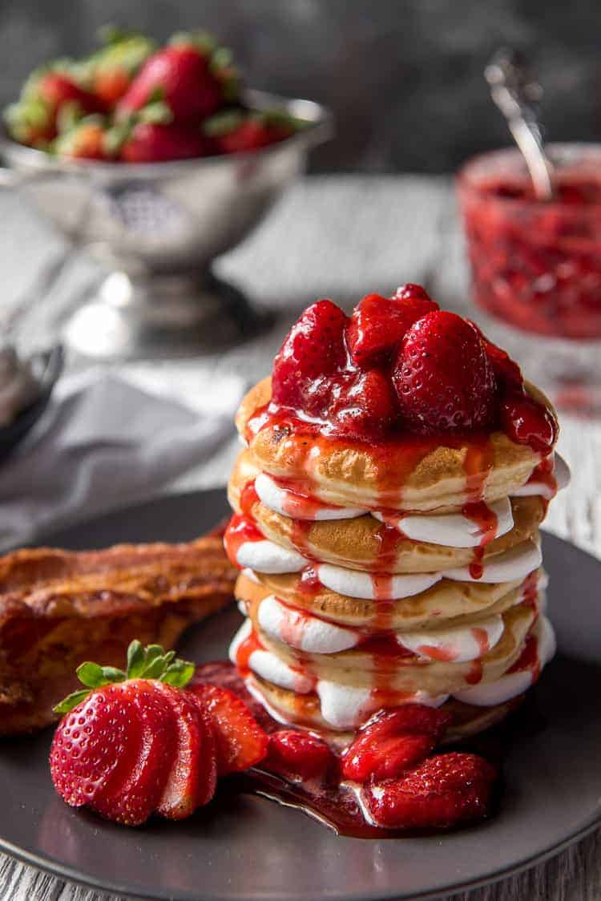

LASAGNA

Strawberry Cheesecake Pancakes are fluffy pancakes filled with a swirl of cream cheese and topped with a
homemade strawberry syrup. This is the perfect perfect breakfast recipe to impress your friends and family!
Be sure to try my classic buttermilk pancakes for another amazing breakfast recipe!
Ingredients
- 8 ounces fresh strawberries, hulled and chopped
- 3/4 cup strawberry jam
- 4 ounces cream cheese, softened
- 5 tablespoons white sugar, divided
- 2 teaspoons milk
- 1/4 teaspoon vanilla extract
- 1 3/4 cups all purpose flour
Steps
- Gather all ingredients.
- For topping, combine strawberries and jam in a small saucepan. Bring to a simmer; set aside.
- For cream cheese swirl, combine cream cheese, 3 tablespoons sugar, milk, and vanilla in a small bowl. Beat with an electric mixer until smooth..
- Transfer cream cheese mixture to a pastry bag or a resealable plastic bag with a corner snipped off. .
- For pancake batter, combine flour, remaining 2 tablespoons sugar, baking powder, baking soda, and salt in a large bowl.
- Combine egg, buttermilk, and oil in a medium bowl.